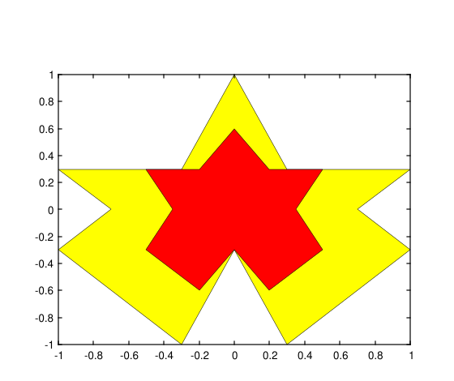
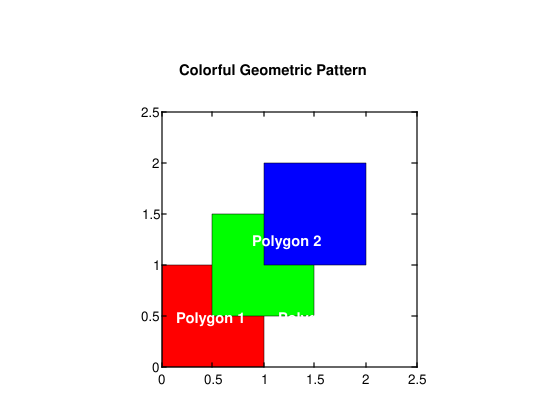
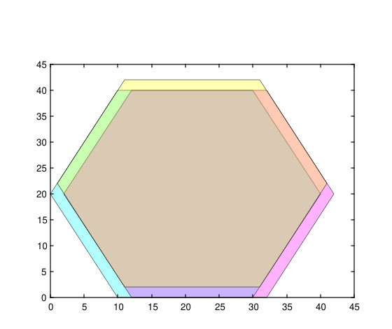

fill(X, Y, C)
fill(..., propertyName, propertyValue)
fill(ax, ...)
go = fill(...)
| Paramètre | Description |
|---|---|
| X | Coordonnées x : vecteur ou matrice. |
| Y | Coordonnées y : vecteur ou matrice. |
| C | Tableau de couleurs : scalaire, vecteur, matrice m×n×3 de triplets RGB. |
| ax | Un objet graphique scalaire : conteneur parent, spécifié comme axes. |
| propertyName | Une chaîne scalaire ou un vecteur ligne de caractères. |
| propertyValue | Une valeur. |
| Paramètre | Description |
|---|---|
| go | Un objet graphique : type patch. |
fill(X, Y, C) crée une forme polygonale 2D avec des sommets définis par les coordonnéesX et Y, et remplit la forme avec la couleur C.
fill(..., PropertyName, PropertyValue, ...) définit des propriétés optionnelles pour l'objet fill/patch à l'aide de paires nom-valeur.
go = fill(...) retourne le handle go de l'objet patch créé.
Paires Nom-Valeur de propriétés :
'FaceColor' : couleur de la forme remplie. FaceColor peut être une chaîne de caractères ou un vecteur RGB à 3 éléments. Par défaut : 'flat' .
'EdgeColor' : couleur des bords de la forme polygonale. EdgeColor peut être une chaîne de caractères ou un vecteur RGB à 3 éléments. Par défaut : 'none' .
'LineWidth' : épaisseur des bords de la forme polygonale. Par défaut : 0.5.
'LineStyle' : style des bords de la forme polygonale. LineStyle peut être une chaîne de caractères ou un code de style de ligne. Par défaut : '-' .
'FaceAlpha' : transparence de la forme remplie. FaceAlpha peut être un scalaire entre 0 et 1. Par défaut : 1.
'EdgeAlpha' : transparence des bords de la forme polygonale. EdgeAlpha peut être un scalaire entre 0 et 1. Par défaut : 1.
'Parent' : handle de l'objet parent pour le patch. Par défaut :gca().
'Vertices' : matrice des coordonnées des sommets. La matrice doit avoir la taille N×2 ou N×3, où N est le nombre de sommets. Par défaut : les coordonnées des sommets sont spécifiées par les argumentsX, Y et Z d'entrée.
f = figure();
outerX = [0, 0.3, 1, 0.7, 1, 0.3, 0, -0.3, -1, -0.7, -1, -0.3, 0];
outerY = [1, 0.3, 0.3, 0, -0.3, -1, -0.3, -1, -0.3, 0, 0.3, 0.3, 1];
innerX = [0, 0.2, 0.5, 0.35, 0.5, 0.2, 0, -0.2, -0.5, -0.35, -0.5, -0.2, 0];
innerY = [0.6, 0.3, 0.3, 0, -0.3, -0.6, -0.3, -0.6, -0.3, 0, 0.3, 0.3, 0.6];
fill(outerX, outerY, 'y');
fill(innerX, innerY, 'r');
% Define the vertices of a colorful geometric pattern
x1 = [0, 1, 1, 0];
y1 = [0, 0, 1, 1];
x2 = [0.5, 1.5, 1.5, 0.5];
y2 = [0.5, 0.5, 1.5, 1.5];
x3 = [1, 2, 2, 1];
y3 = [1, 1, 2, 2];
% Define colors for the polygons
colors = ['r', 'g', 'b'];
% Create a figure with a white background
figure('Color', 'w');
% Fill the polygons with different colors
fill(x1, y1, colors(1));
hold on;
fill(x2, y2, colors(2));
fill(x3, y3, colors(3));
% Add labels to distinguish the regions
text(0.5, 0.5, 'Polygon 1', 'Color', 'w', 'HorizontalAlignment', 'center', 'FontWeight', 'bold');
text(1.25, 1.25, 'Polygon 2', 'Color', 'w', 'HorizontalAlignment', 'center', 'FontWeight', 'bold');
text(1.5, 0.5, 'Polygon 3', 'Color', 'w', 'HorizontalAlignment', 'center', 'FontWeight', 'bold');
axis equal;
title('Colorful Geometric Pattern');
f = figure();
x = [10 30 40 30 10 0];
y = [0 0 20 40 40 20];
hold on
fill(x, y, 'cyan', 'FaceAlpha', 0.3);
fill(x + 2, y, 'magenta', 'FaceAlpha', 0.3);
fill(x + 1, y + 2, 'yellow', 'FaceAlpha', 0.3);
| Version | Description |
|---|---|
| 1.0.0 | version initiale |